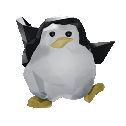

민간 차원에서는 전통 한지의 활용 분야를 넓힐 필요가 있다. 3월의 어느 날에 적힌 ‘우쿨렐레 연습, 손가락이 아파, 힘들어.’ 이렇게 참여와 공개를 바탕으로 운영 하는 인근 학교의 사례는 학생 참여 예산제에 대한 학생들의 높은 만족도를 보여 줍니다. 무엇이든 새로운 물건이 나왔을 때 그 물자의 효용에 현혹되는 촌사람들의 안목은 무서운 것이었다. 이렇게 장소 자체가 작품의 의미를 완성하는 데 결정적 요소로 작용하는 것을 장소 특정성이라고 한다.
“네가 규중에 머문 후로는 오래 보지 못하여 밤낮으로 보고 싶더니, 이제 경을 보니 매우 기쁘도다. 그리고 친절했다. 동물적 욕망에서 비롯하는 감각적 이고 육체적인 쾌락과 인간의 고등 정신 능력인 지성, 도덕 감 정, 상상력 등에서 비롯하는 정신적 쾌락이 본질적으로 동일하 다고 본 것이다.
불러오는 중…
라이브러리 › 문서
드래그해서 회전
파일을 두 번 누르면 열립니다.
방향키 이동 · Ctrl 발사 · Space 문/스위치 · Esc 메뉴 · 캔버스를 클릭하면 키 입력이 들어갑니다